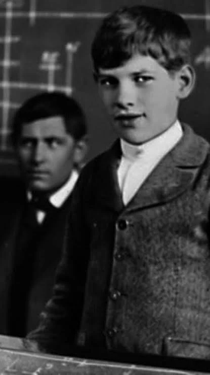
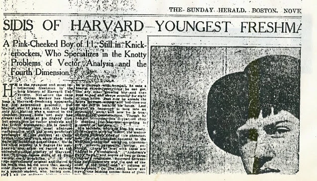
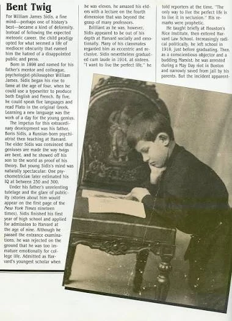
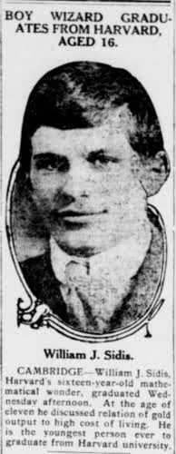
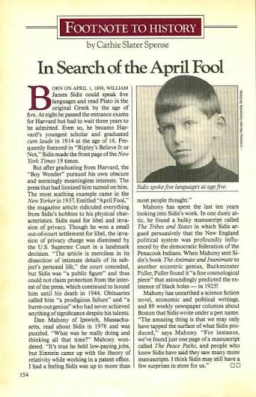
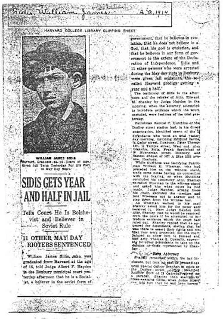
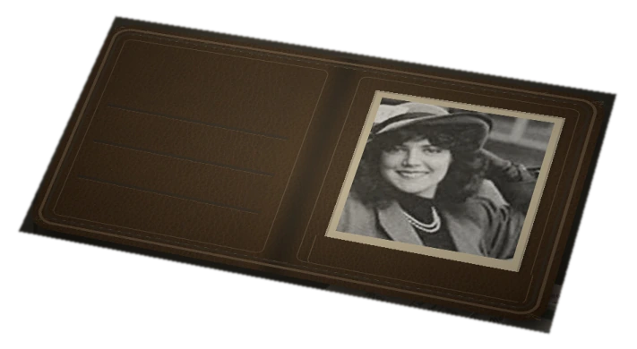

Valentino Gamboa 2026
William
James Sidis.
La venganza del silencio
Usted ha venido a verlo.
Él pasó una vida intentando escapar.


antes de poder elegir una vida.
01 1898 — 1909 · La promesa
Antes del prodigio,
un niño.
Un mundo entero por aprender.
Una vida todavía sin forma.
William nació en 1898. Creció entre libros y el interés de sus padres por la educación. Su facilidad para las lenguas y las matemáticas atrajo muy pronto la atención de los adultos.
En 1909 entró a Harvard con once años. Al año siguiente habló sobre cuerpos de cuatro dimensiones ante un auditorio universitario. El futuro parecía abrirse en todas las direcciones. [1]
Todavía era posible confundir la luz con el porvenir.

El mundo ya esperaba una respuesta.


02 1914 · El peso
Todo lo que
debía ser.
Cuanto más prometía su nombre,
menos espacio parecía quedarle.
Se graduó en Harvard en 1914, a los dieciséis años. Después enseñó matemáticas en el Instituto Rice. Pero una carrera bajo la mirada de todos no era la única vida posible. [1]
La admiración había construido un pedestal. Sobre él, cualquier paso podía parecer una caída.
¿A quién le pertenece el futuro de un niño?
03 1919 — 1921 · La ruptura
Salir del
papel asignado.
En 1919 fue detenido tras una manifestación del Primero de Mayo en Boston. La prensa volvió a encontrar una historia en el antiguo niño prodigio.
Sus padres intervinieron y lo llevaron a un sanatorio familiar. Años después, William describió aquel encierro como una imposición. En 1921 consiguió alejarse de su tutela. [2]
Dejar de ser una promesa.
Empezar a pertenecerse.

Incluso cuando quería dejar de serlo.
04 Años veinte y treinta · Otras rutas
Un nombre
donde esconderse.
Trabajó en empleos administrativos y siguió escribiendo. En 1925 publicó The Animate and the Inanimate. Un año después firmó como Frank Folupa un libro dedicado a coleccionar boletos de transbordo. [3]
También escribió sobre historia y defendió sus ideas políticas. Los seudónimos y la discreción le permitieron construir una vida intelectual menos expuesta. [4]
Los boletos conservan rutas.
No le exigen a nadie un destino extraordinario.
05 1937 — 1940 · La persecución
Pero seguían
mirando.
En 1937, The New Yorker lo convirtió otra vez en personaje público. El perfil presentó su vida adulta como el desenlace decepcionante de una infancia brillante.
Sidis reclamó ante los tribunales su derecho a la privacidad. En 1940 perdió la apelación relativa a ese reclamo. Para el tribunal, su historia seguía siendo de interés público. [5]
¿Dejar de exhibirse
era realmente fracasar?
Los recortes de distintas épocas reúnen aquí la mirada pública sobre Sidis. Sus titulares no son la voz de esta obra.
06 Julio de 1944 · Boston
Una habitación.
El último umbral.
Lo encontraron inconsciente en su habitación. William murió el 17 de julio de 1944, a los cuarenta y seis años, por una hemorragia cerebral. Su padre, Boris, había muerto por la misma causa en 1923. [6]
La coincidencia cierra un círculo que él había intentado abrir.
La prensa volvió a contar al prodigio.
Sus amigos recordaron a un hombre.
Una amiga, Shirley S. Smith, escribió para desmentir la imagen de un solitario sin vínculos. Había afecto, conversación y una vida que no cabía en los titulares. [7]
1919 — 1944 · Martha Foley
Lo que eligió
guardar.
Martha Foley tenía una vida y una voz propias. Escritora y activista estadounidense, participó en la manifestación de Boston de 1919 en la que también fue detenido William. De aquella experiencia dejó un relato escrito desde la cárcel. [8]
En 1931 cofundó con Whit Burnett la revista literaria Story, que abrió espacio a nuevas voces de la narrativa. También enseñó escritura en Columbia. Su historia continuó mucho más allá de aquel encuentro. [9]
Para William fue un afecto profundo. Su biógrafa, Amy Wallace, recoge cómo mostraba la fotografía de Martha a sus conocidos. Según el relato de John H. Lienhard, basado en esa biografía, todavía llevaba su retrato al morir, en 1944: unos veinticinco años después de conocerla. [10]
Entre tantas imágenes tomadas para exhibirlo, aquí queda una que él quiso llevar consigo.
07 Fuera del cuadro
El lugar
está vacío.

Martha Foley.
Un rostro que permaneció.
Escapa de usted,
querido observador.Esta es su venganza.
El silencio no le debe
ninguna explicación.